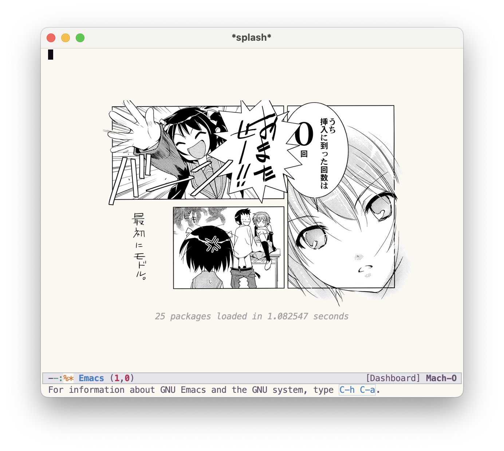
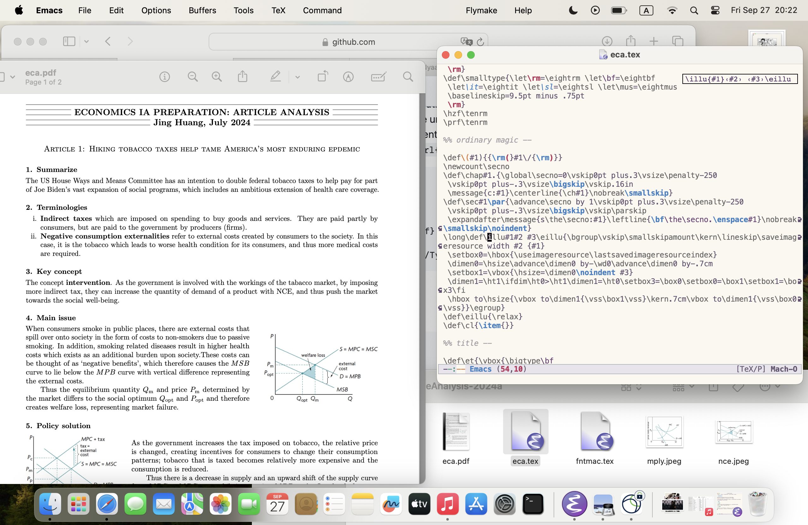
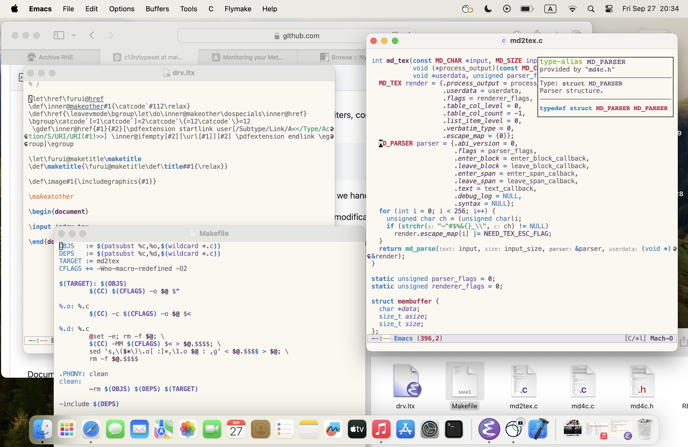

为小窗优化的Emacs配置

1. 缘起
因为暑假里去考了SAT，又因为愚蠢的BlueBook不支持Linux （准确的说是只支持School Managed ChromeBook），于是买了一个MacBook。
M3的续航让我十分满意，于是我尝试在学校中使用她。在我将先前Linux上的配置迁移过去时，发现Aqua默认的Emacs小窗尺寸十分好看，而之前由于使用窗口管理器，配置是为了全屏（至少是半屏）设计的。
于是重新改了一个配置出来，主要是让它更好看，以及更符合我所谓的「小窗哲学」。
2. 为什么是小窗
所谓的小窗哲学，实际上就是一个窗口只做一件事，同时使用多个窗口。我认为这才是正常的电脑使用方式，所以对我来说Emacs只是一个编辑器。
先前之所以使用窗口管理器，原因跟效率无关，而是因为Linux下无论是KDE还是Gnome的窗口都很丑。窗口管理器虽则简陋，但好歹不至于不好看。
3. 改动
3.1. 状态栏
之前我写过一篇文章介绍怎么写一个好看且轻量的Modeline，但是右对齐的是所有的模式。在某些时候，他们会溢出。于是我就只保留了主模式。
3.2. PDF预览
我经常写TeX，所以有PDF预览的需求。之前用的是pdf-mode，但是它需要gcc，且Mac上有更好的替代品。（之前我在Gentoo下看PDF都是用gv的。）

3.3. ELDOC
我之前一直使用eldoc-box的at-hover-mode，但是因为窗口小，很容易挡到别的东西，于是现在把它放在右上角。

3.4. 行号
无关紧要的东西，我一直是放到状态栏里的。
4. 最后
改动的地方不多。主要是我本来也没装多少个包。若需参考，我的配置在这里。直接把它clone到~/.emacs下就行了。
有些东西大家估计用不到，比如装来玩的LdBeth的teco-mode或颅内高潮用的cweb-mode之类，在init.el里注释掉对应条目就好了。
就这样。